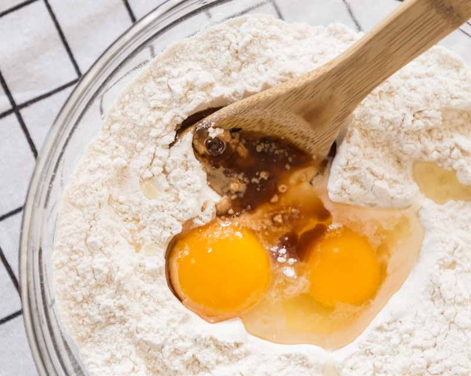
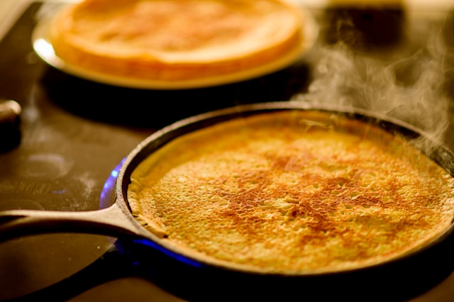
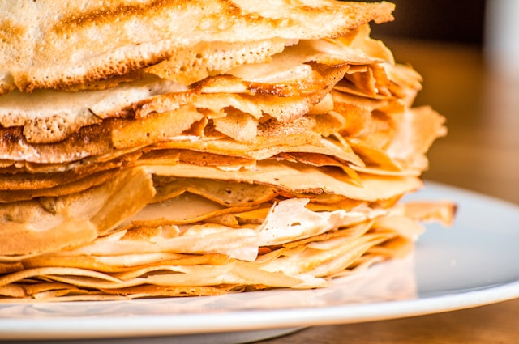
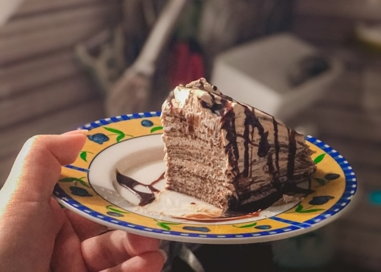

My favorite Cake Recepie
Anytime I crave cake or want to treat my loved ones to something sweet, this easy, fast, and delicious crepes cake recipe is my go-to. It's perfect for tea with friends, birthday celebrations, and even holiday gatherings.
Crepes Kate Mishchankova on UnsplashStep 1 - What you will need
- 2 cups all-purpose flour
- A cup of unsweetened cocoa powder
- Half cup of cup granulated sugar
- 4 large eggs
- 3 cups of milk
For The Cream:
- 2 cups of heavy whipping cream
- 500 gram of Cream Cheese
- 300 gram of Condenced milk
Step 2 - Mixing all together
After gathering all the ingredients, all you have to do is mix the crepe ingredients separately. The batter will be watery, but slightly thick, kind of like a thin soup. The main thing is to mix everything in the right order. First, combine the cocoa powder, sugar, and flour. Second, after mixing those dry ingredients, add the eggs and stir everything together a little. Then, slowly pour in the milk. This order helps make the texture smooth and lump-free. For the cream, you can either mix everything by hand or use a mixer to make it faster. The texture should look like the kind of cream you spread between cake layers: light, fluffy, and smooth.
 Cooking Process No Revisions on UnsplashStep 3 - Cooking
For cooking crepes, using a non-stick pan is important, but adding a couple of spoonfuls of sunflower oil to the batter will also help prevent the crepes from sticking to the pan. Pour a thin layer of batter into the heated pan and swirl it around to evenly coat the bottom. Cook each crepe for 1–2 minutes on each side, or until it is lightly cooked and easy to flip. Stack the finished crepes on a plate and let them cool before assembling the cake.
 Crepes in Oven Philippe Murray-Pietsch on UnsplashStep 4 - Getting it all together
After making enough crepes to build your cake, start assembling by spreading a layer of cream on top of each crepe. For some added crispiness, I sometimes sprinkle in a bit of unsalted crushed nuts between the layers. It’s just an extra touch of deliciousness and a fun way to get creative and experiment. Once you’ve finished assembling the cake, let it rest in the fridge for at least 3 hours, or even better, overnight to give it extra softness and allow the flavors to blend.
 Fresh Cooked Crepes Yevgen Tarasov on UnsplashStep 5 - Enjoying
Serve the cake with your favorite tea, and invite some friends over to enjoy this soft, delicious, and unforgettable treat. It is truly mouthwatering and perfect for sharing!
 Piece of Crepes Cake Dominique Yurika on Unsplash